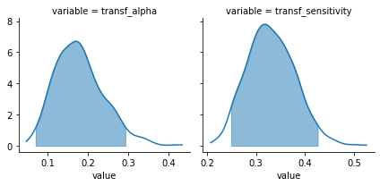
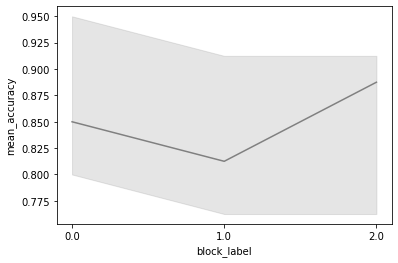

How to load a ModelResults object¶
[1]:
import rlssm
[2]:
model_fit = rlssm.load_model_results('/Users/laurafontanesi/git/rlddm/rlddm/RL.pkl')
[3]:
model_fit.model_label
[3]:
'RL'
[4]:
model_fit.plot_posteriors();

[5]:
model_fit.plot_mean_grouped_posterior_predictives(grouping_vars=['block_label'], n_posterior_predictives=1000)

[6]:
model_fit.data_info['data']
[6]:
| participant | block_label | trial_block | f_cor | f_inc | cor_option | inc_option | times_seen | rt | accuracy | |
|---|---|---|---|---|---|---|---|---|---|---|
| 0 | 20 | 0.0 | 1.0 | 46.0 | 46.0 | 4 | 2 | 1.0 | 2.574407 | 1.0 |
| 1 | 20 | 0.0 | 2.0 | 60.0 | 33.0 | 4 | 2 | 2.0 | 1.952774 | 1.0 |
| 2 | 20 | 0.0 | 3.0 | 32.0 | 44.0 | 2 | 1 | 2.0 | 2.074999 | 0.0 |
| 3 | 20 | 0.0 | 4.0 | 56.0 | 40.0 | 4 | 2 | 3.5 | 2.320916 | 0.0 |
| 4 | 20 | 0.0 | 5.0 | 34.0 | 32.0 | 2 | 1 | 3.5 | 1.471107 | 1.0 |
| ... | ... | ... | ... | ... | ... | ... | ... | ... | ... | ... |
| 235 | 20 | 2.0 | 76.0 | 50.0 | 55.0 | 4 | 3 | 38.0 | 1.953983 | 0.0 |
| 236 | 20 | 2.0 | 77.0 | 59.0 | 36.0 | 4 | 2 | 39.0 | 1.861715 | 1.0 |
| 237 | 20 | 2.0 | 78.0 | 54.0 | 48.0 | 4 | 3 | 39.5 | 1.690388 | 1.0 |
| 238 | 20 | 2.0 | 79.0 | 45.0 | 34.0 | 2 | 1 | 39.5 | 1.593337 | 1.0 |
| 239 | 20 | 2.0 | 80.0 | 51.0 | 44.0 | 3 | 1 | 40.0 | 2.221254 | 1.0 |
240 rows × 10 columns
[7]:
model_fit.parameters_info
[7]:
{'hierarchical_levels': 1,
'n_parameters_individual': 2,
'n_parameters_trial': 0,
'n_posterior_samples': 1000,
'parameters_names': ['alpha', 'sensitivity'],
'parameters_names_transf': ['transf_alpha', 'transf_sensitivity'],
'parameters_names_trials': ['alpha', 'sensitivity']}